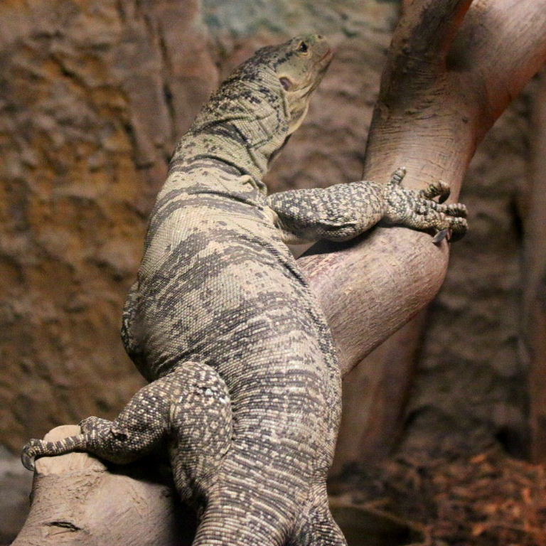
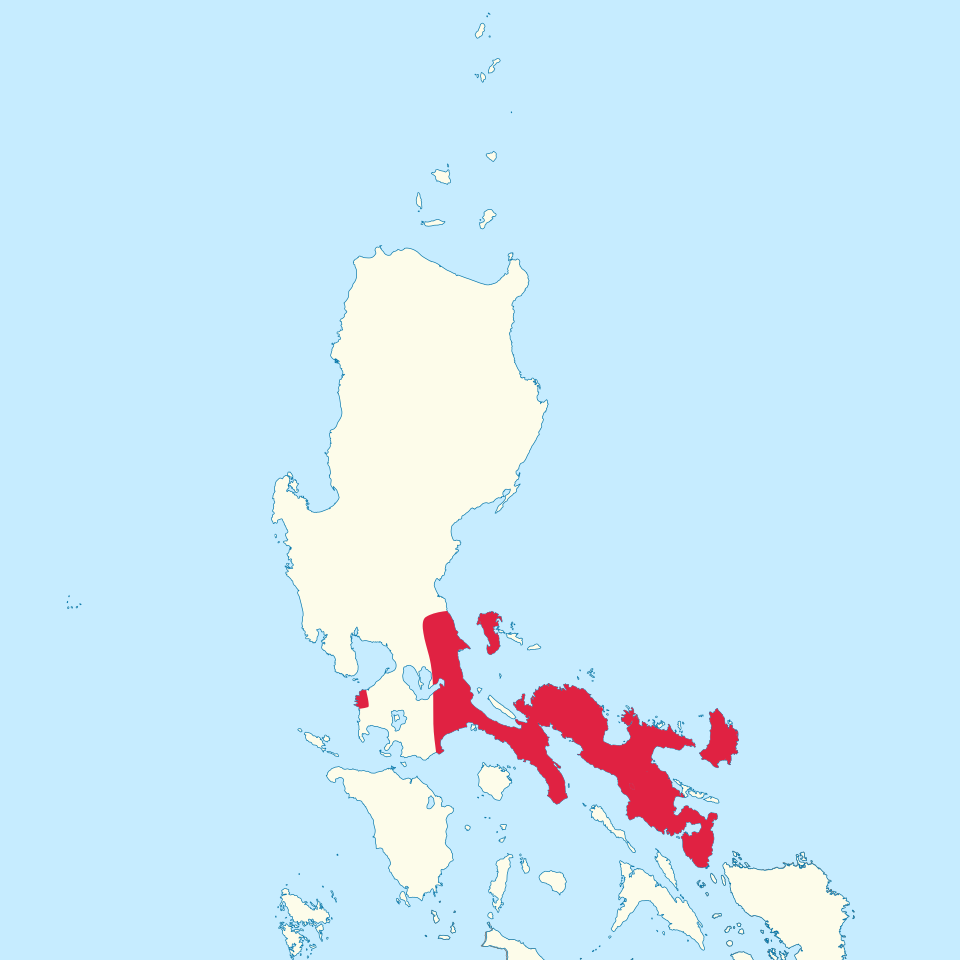

The Basics
Common Name
Gray's Monitor
Conservation Status:
Vulnerable[1]
Physical Profile
Their size hovers 180 cm, and it can be diferenciated from other species of monitors by its distinctive gray and olive coloration[2].
Habitat and Geography
They live in select islands of the philippine archipelago primarily polillo.[2].


Ecology and Behavior
- They live in trees(arboreal) and are solitary.[2]
- They are oviparous (egg-laying) however nothing more concrete is known about their reproductive behavior apart from the fact that their egg laying time is somewhere between july and october.[3]
- Not many predators are known to target Gray's Monitors similarly to other monitors, apart from humans.[4]
- Likewise to the white-spotted bamboo shark, their methods of communication are not well researched and curently unknown.
- Onivorous, their main diet is fruits however they are also known to consume insects and small invertebrates to supplement their diet. Their blunt teeth are adapted for crushing snails and picking fruits.[2]
Full Scientific Classification
| Taxonomic Rank | Scientific Name |
|---|---|
| Kingdom | Animalia |
| Phylum | Chordata |
| Class | Reptilia |
| Order | Squamata |
| Family | Varanidae |
| Genus | Philippinosaurus |
| Species | Varanus olivaceus |